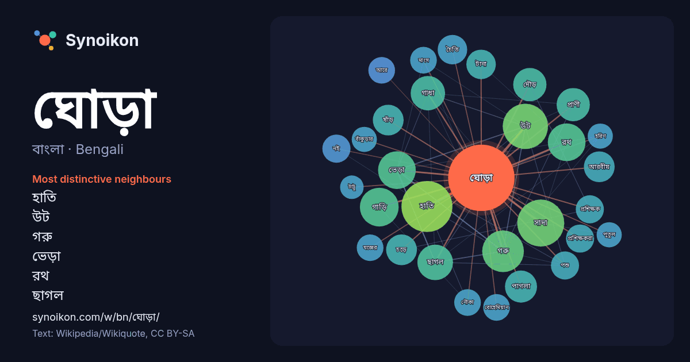

বাংলা · Bengali · word of the day list
ঘোড়া
“horse” · The words found around it in 961 instances from Bengali Wikipedia, Wikiquote.

Most distinctive neighbours
- হাতি 30×
- উট 25×
- গরু 21×
- ভেড়া 17×
- রথ 17×
- ছাগল 16×
- গাধা 15×
- সাদা 14×
- গাড়ি 14×
- দৌড় 14×
- পাগলা 13×
- ষাঁড় 12×
- আরবীয় 12×
- চড়ে 12×
- চৈতি 12×
- প্রশিক্ষকরা 11×
- নই 11×
- প্রাণী 10.0×
- বোহেমিয়ান 9.8×
- আরে 9.8×
× = how many times more often than in general Bengali Wikipedia text.
Most frequent neighbours
- হাতি 33
- সাদা 28
- উট 26
- একজন 23
- গরু 22
- গাড়ি 19
- সময় 19
- ভেড়া 18
- রথ 18
- ছাগল 16
- অর্থ 15
- গাধা 15
- নাম 15
- পরিচিত 15
- মানুষ 15
- দৌড় 14
- প্রাণী 14
- পাগলা 13
- মত 13
- আরবীয় 12
In context
- জায়গায় বা জঙ্গলে বাস করে। ঘোড়া বা ঘোটক দ্রুতগামী চতুষ্পদ জন্তু যার পিঠে চড়া যায়। দ্রুতগামী বলে এর নাম তুরগ, তুরঙ্গম। ঘোড়া প্রজাতির সাধারণভাবে মেজাজের Wikipedia snippets · ঘোড়া
- আন্দালুসীয় ঘোড়া, খাঁটি স্পেনীয় ঘোড়া বা পিআরই (স্পেনীয়: pura raza española) নামেও পরিচিত, এটি ইবেরীয় উপদ্বীপের একটি ঘোড়ার জাত, যেখানে এর পূর্বপুরুষরা Wikipedia snippets · আন্দালুসীয় ঘোড়া
- প্রতিটি আধুনিক জাতে আরবীয় ব্লাডলাইন পাওয়া যায়। আরবীয় ঘোড়া একটি বহুমুখী জাত। আরবীয় ঘোড়া ইনডুরেন্স রাইডিং এর শৃঙ্খলা আয়ত্ত করেছে এবং আজ অশ্বচালনা Wikipedia snippets · আরবি ঘোড়া
- ডাটাবেসের মতে, ঘোড়া প্রজনন বাংলাদেশে একটি প্রাচীন ঐতিহ্য, এবং মৌখিক ঐতিহ্য নির্দেশ করে যে স্থানীয় ঘোড়াগুলি আরবীয় ঘোড়া এবং পারসিক ঘোড়া দ্বারা প্রভাবিত Wikipedia snippets · বাংলাদেশের স্থানীয় ঘোড়া
- বাঁকুড়ার ঘোড়া এক ধরনের পোড়ামাটির ঘোড়া। পশ্চিমবঙ্গের বাঁকুড়া জেলার পাঁচমুড়া গ্রামে এই বিশেষ শিল্পদ্রব্যটি তৈরি হয়। এগুলি "সুরুচিপূর্ণ ভঙ্গি ও মৌলিক Wikipedia snippets · বাঁকুড়ার ঘোড়া
- করা হয়। প্রতিটি খেলোয়াড় দুটি ঘোড়া নিয়ে খেলা শুরু করে, যা নৌকা ও হাতির মধ্যে থাকে। কথ্য হিসাবে এটি কখনও কখনও "ঘোড়া" হিসাবে অভিহিত হয়, এটি বেশ কয়েকটি Wikipedia snippets · ঘোড়া (দাবা)
- একটি ডানাযুক্ত ঘোড়া, উড়ন্ত ঘোড়া বা টেরিপাস হল এক ধরনের কিংবদন্তির প্রাণী। এটি সাধারণত একটি ঘোড়া হিসেবে চিত্রিত হয় যার পাখির ডানা থাকে। ডানাযুক্ত ঘোড়ারা Wikipedia snippets · পাখাযুক্ত ঘোড়া
- ট্রয়ের ঘোড়া বা ট্রয়ের অশ্ব হচ্ছে ট্রয় বা ইলিয়ন নগরের পতনের বিখ্যাত গ্রিক উপকথার সংগে জড়িত কাঠের ঘোড়া। কথিত আছে যে, গ্রিকরা একটি অতিকায় কাঠের ঘোড়া তৈরি Wikipedia snippets · ট্রয়ের ঘোড়া
More Bengali words
- অরণ্য
- আয়না
- ইতিহাস
- ঈশ্বর
- কাজ
- কুকুর
- ক্ষমতা
- খাদ্য
- গান
- গ্রীষ্ম
- ঘড়ি
- ঘণ্টা
- ছায়া
- জননী
- জলবায়ু
- জীবন
- ঝড়
- টাকা
- ট্রেন
- দারুচিনি
- দ্বীপ
- নক্ষত্র
- নীরবতা
- পরিবার
- পানি
- পাহাড়
- প্রকৃতি
- বাগান
- বিজ্ঞান
- বিড়াল
- বৃষ্টি
- ভাষা
- মধু
- মরুভূমি
- মানচিত্র
- মৃত্যু
- রাস্তা
- রুটি
- লবণ
- শরৎ
- শহর
- শিল্প
- শীত
- সত্য
- সময়
- সেতু
- সোনা
- স্বাস্থ্য
- হৃদয়
Precomputed on 2026-10-09 with default settings (±5 words, medium corpus). The interactive map can refresh it with live data.